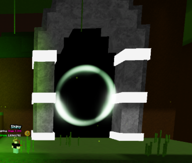
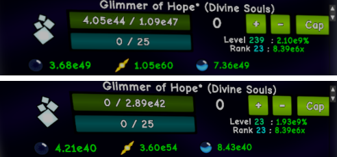
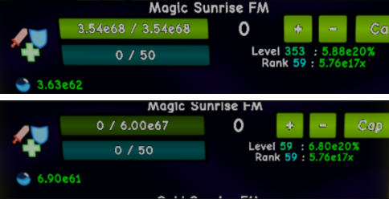

Grasslands
Introduction & Notice
You have reached Grasslands! This is the beginning of the long grind towards your next major goal. Before you get into the guide, there is some important and useful information to note below.
You should avoid any of the following actions:
- Spending any Flowers in Flower Shop II.
- Forgetting to purchase upgrades in all tabs of the Singularity chart.
- Performing a Sunrise for a lower amount of Sunrise FM.
- Doing a Twilight for zero bonuses.
- Ignoring Mastery upgrades and Combat Ranks.
Guide Info & Formatting
This guide will use abbreviations, with the first use of them being marked in bold next to the full version i.e. Combat Rank (CR). Names of resets and currencies will also be marked in bold for clarity.
Constellation Setups
Before you proceed, you are recommended to update your constellation setups to one of the below. These are also available within the in-game help menu.
| Table 1.1 | Persistent Constellation Setups |
|---|---|
| Basic Persistent Constellations | (Refer to Image in Solarians Guide or In-Game) |
| Later Persistent Constellations | (Refer to Image in Solarians Guide or In-Game) |
Grasslands Overview
Welcome to the Grasslands! The main component of Grasslands are the dungeons, which is an RPG style minigame. The first thing you should notice is the inventory board, which is your main hub for managing your dungeon loot.
You will also notice a board next to the inventory called Combat Ranks (CRs), which are purchasable levels that boost your combat stats. To defeat enemies, you can either click on them, or press the E key whilst standing within range.
Basic Enemy Tutorial
A dungeon level is made up of rooms, but each room requires you to kill a different amount of enemies. Each dungeon has a set selection of enemies that can spawn (Regular, Tank, Glass Cannon).
Each of these items has a value in gold and shards. You will gain gold by selling the gear, or upgrade shards by scrapping it. You should only sell items that are worse than those you have equipped.
Basic Dungeon Tutorial
Each dungeon has unique gear for each type of loot, starting at Common Rarity, and working its way up to Mythic Rarity. When starting a dungeon, you will want to focus on killing the easiest enemies first.
Upgrade Shards should be invested only into the Weapon and Armour. This is due to these item types getting larger stat gains per level when compared to other levelable item types.
Mastery Tutorial
Each item of rarities Common to Mythic have 5 Mastery Tiers. Increasing the mastery tier of an item will grant the player Mastery Points (MPs).
Mastering an item will delete the item, and mastery points should not be spent into Generator upgrades.
D1: Grass Valley
Gear Required for D1-4 Completion: Legendary OR Medium Level Rare from D1.
Well done on making it to the first dungeon. Be aware that if you find a generator for the first time, equip it immediately. I recommend using a gold generator when you are not progressing in grassland, and an upgrade shards generator when progressing in grassland.
D2: Dark Mine
Gear Required for D2-4 Completion: Legendary OR Medium Level Rare from D2.
The 2nd Dungeon is very similar to the first one. This is the first dungeon where you should start mastering items once you unlock the Combat Power upgrade in the mastery board.
D3: Desert
Gear Required for D3-4 Completion: Legendary Gear from D3.
The third dungeon is a big step up from the previous. Afterwards, you will want to aim for the rare gear of this dungeon.
Auto Sell/Scrap Notice
In D3 and above you will need to grind gold/shards, so this is the best time to use the Auto Sell/Scrap feature.
Reminder: Enabling Auto Mastery temporarily disables Auto Scrap / Sell.
D4: Sandtone Ruins
Gear Required for D4-4 Completion: Legendary Gear OR Medium Level Rare Gear from D4.
Dungeon 4 is much harder than the previous. You will likely struggle to kill the enemies in the beginning, so should take advantage of the damage and block abilities from your rings.
Dungeon Collectables
At D4 and later dungeons, there is a special type of room that spawns called the Mastery Room. D4 also causes new interactable collectables to start randomly (Healing, Skill Point, Shop).
D5: Desolate Mountains
Gear Required for D5-4 Completion: Legendary Gear from D5.
Dungeon 5 is the most important dungeon of grasslands; beating the first level is imperative to progression, as the first boss drops a new item called the “Corrupted Shard”.
EXTRA IMPORTANT INFORMATION: YOU SHOULD NOT TWILIGHT YET
Synthesis
Synthesis is a vital mechanic for progression. You’ll notice a board that says “activate the machine”. Doing so will start generating Corruption Shards.
You can spend Corruption Shards on the Shop right next to the synthesis machine. You should focus on the first three upgrades: Corruption Shard Synthesis Yield, Corrupted Offense/Defense, and Synthesis Speed.
Supernova Tier 9
At around stage 160-163 you should meet the requirements for SNT9. You unlock a new portal in grasslands (Dark Dungeons), Auto-Fight, and Forming compression is no longer reset when performing a sunset reset.
Twilight
Twilight is the third and final reset of the solar obelisk and the most punishing. Your first Twilight reset should be done at stage 161+ for 28+ Unstable Souls (Usouls).
Doing your first Twilight will unlock New Corruption Shard variants, a new tab in Forming, new upgrades in Darkness, and the 6th dungeon.
D6: Empyrean Temple
Gear Required for D6-4 Completion: Legendary Gear from D6.
This Dungeon is not a big jump in difficulty. It is recommended to have CR 15+ at this point.
DD1: Inferno Valley
Dark Dungeons (DD) are modified versions of previous dungeons that are much harder. For this dungeon all enemies have pierce.
Supernova Tier 10
After your first Twilight and around stage 195 you should meet the requirements for SNT10. A new synthesis slot is unlocked and Solarian power has increased by x20.
D7: Cursed Lands (S180)
After obtaining the mythical gear from DD1 head to this dungeon. You will get new synthesis gems called “flare shards”.
DD2: Silent Cave
The 2nd dark dungeon is far harder than the previous. The modifier of this dungeon is No Heal.
Second Twilight
Your second Twilight reset should be performed around Stage 195. By this point it is recommended to have Clouds centralized as well as Supernova Tier 10.
Third Twilight
After reaching stage 217-220 you should have centralized Dark fruits and Rings by then. Perform your third Twilight reset at stage 230.
Supernova Tier 11 & Infinity Loops
You will be able to meet the requirements of Star tier 11 at around stage 252. The Final collection resource “infinity loops” is unlocked.
Fourth Twilight
After obtaining star tier 11 and reaching stage 250+, you should perform your 4th twilight reset.
D8: Haunted Crypt (S270)
D8 is a big jump in difficulty compared to D7, needing maxed mythical gear from DD2 to beat its first level. You should aim to get the rare Power Gem at the end of the dungeon.
Fifth Twilight
The 5th Twilight reset should be done at around stage 295, you should have centralized measure.
DD3: Industrial Wasteland
The 3rd dark dungeon is extremely difficult. All the enemies have pierce and you can not heal.
Equipment Ascension
Equipment ascension is a mechanic unlocked by buying the "ascension" singularity chart upgrade. I recommend ignoring item ascension until DD4 or optional content.
Sixth Twilight
Your Sixth Twilight should be done after centralizing arcs, lines, observatorium and reservatorium at around stage 370.
D9: Chaotic Canyon (S380)
This dungeon is extremely hard. It is recommended to get the uncommon gear if you can, however due to high upgrade costs you can ignore this dungeon until you get 20 ranks of dungeon explorer.
Supernova Tier 13 (~S405)
You should meet the requirements for ST13 at stage 405+. Sunrise FM updates without needing to sunrise.
7th & 8th Twilights
Perform your 7th Twilight after centralizing dark charge and stardust. Your 8th Twilight should be done after getting all centralizes at stage 500+.
Stages 500 to 1,000
At this stage you will make use of the allocate one to all button to get every upgrade, alongside Twilighting once you get a large amount of bonuses until you reach star tier 14.
Final Castle (S1k)
Upon reaching stage 1000 and beating the last level of D9 the final dungeon D10 is unlocked. Confront him.
Congratulations! You have completed the main Grasslands guide.
Stage 1,000 - Star Tier 15
If you wish to continue playing W1 then there is plenty of bonus content waiting for you.

Go through this portal in W2 in order to come back to W1. At around stage 1380 you’ll be able to unlock star tier 15, the only buff given by this tier is passive Usouls generation, this makes the Twilight reset completely redundant.
DD4: Seven Small Stones
This Dungeon should be tackled after you have maxed dungeon explorer and gotten 50+ levels on Combat Power V in the Mastery shop. You should get the Mythical gear and max it and the mythical Aero Gem VI, afterwards you can ignore this dungeon.
Cost Reset (Credit to Ben0001)
After getting Super Keep Rank, you can now cost reset. You do this by sunsetting after gaining at least 1 rank of Glimmer of Hope. This will keep the rank the same, and set your level to your rank. After doing this, the upgrade cost will be significantly decreased.
Example:

This also applies to sunrising when it comes to sunrise FM.
Example of sunrise cost reset:

Loop Information
Loop is a reset that you can perform after reaching Stage 1000 which resets absolutely everything (except grassland gear, Flower & Planet Run related features and some permanent supernova tier bonuses), and provides a global multiplier.
YOU SHOULD GET S20,000 before your first loop as you get an extra loop and looplet for every 10,000 stages once you loop.
Pushing for Stage 10K & 20K
Your progress will slow down and you’ll have to rely on 3 main strategies:
- Cost Resetting: Doing a cost reset by sunsetting with Super Keep Rank maxed.
- Unstable Souls Bonuses: After ST15 you will need to manually spend unstable souls in the soul bonuses.
- Utilizing Synthesis: While upgrading Usoul bonuses you’ll get a huge boost to synthesis.
Doing all of the above should help you reach stage 20K in 20 to 30 minutes, then you can do your first loop.
Appendix
Centralize Requirements
| Currency | Stage | Reqs |
|---|---|---|
| Momentum | Stage 125 | N/A |
| Moonstone | Stage 134-137 | N/A |
| Unnatural Grass | Stage 136-137 | N/A |
| Normality | Stage 134-138 | N/A |
| Clouds | Stage 184 | N/A |
| Dark Fruits | Stage 200-205 | Level 6 |
| Rings | Stage 212-215 | Level 13 |
| Planetarium | Stage 253 | N/A |
| Astro | Stage 270-274 | N/A |
| Measure | Stage 295-303 | Level 416 |
| Planets | Stage 308-315 | Level 437 |
| Arcs | Stage 327-330 | Level 464 |
| Lines | Stage 337-339 | N/A |
| Observ & Reserv | Stage 352 | R42 Compaction, R15 PoN |
| Dark Charge | Stage 402-405 | N/A |
| Stardust | Stage 422 | N/A |
| Perks..? | Stage 444 | N/A |
| Perks | Stage 484 | N/A |
Stage Bonuses
| Stage | Bonus |
|---|---|
| Stage 2+ | 3x Sunrise FM Compounding, 2x Sunstone Compounding, 4x Solar Rays Compounding. |
| Stage 10+ | 3x Solar Shards Compounding |
| Stage 50+ | 1.5x Solar Flares Compounding |
| Stage 100+ | Sunrise FM per stage decreases to 1.05x per stage |
Singularity Order
| Currency | Upgrade | Notes |
|---|---|---|
| Moonstone | Free Compression | Compression EL is better than increased souls gain |
| Dark Fruits | Mega Offense | Helps you gain more stages |
| Astro | The Collector | Helps you gain more stages |
| Arcs | Divine Absorber | Needed for divine souls |
| Dark Charge | Sharper Edge | Or other option if D9 incomplete |
Supernova Requirements
| Tier | Stage | Rank Req |
|---|---|---|
| SNT8 | ~Stage 114 | Rank 8 |
| SNT9 | ~Stage 160 | Rank 13 |
| SNT10 | ~Stage 193 | Rank 15 |
| SNT11 | ~Stage 250 | Rank 16-17 |
| SNT12 | ~Stage 322 | Rank 29 |
| SNT13 | ~Stage 403 | N/A |
| SNT14 | ~Stage 715 | Rank 115 |
| SNT15 | ~Stage 1300 | N/A |
Stages to Twilight At
| # | Stage |
|---|---|
| 1 | ~Stage 161 |
| 2 | ~Stage 195 |
| 3 | ~Stage 225 |
| 4 | ~Stage 250 |
| 5 | ~Stage 285-300 |
| 6 | ~Stage 370 |
| 7 | ~Stage 430+ |
| 8 | ~Stage 500+ |
| 9 | ~Stage 700+ |
Upgrade Unlock List
| Upgrade | Unlock | Description |
|---|---|---|
| Solar Powered Momentum | SNT8 | Increases momentum earned by 1e9x per level |
| Remnants Autobuy III | SNT9 | Autobuys the final three remnant upgrades |
| Solar Powered Moonstone | SNT9 | Increases moonstone earned by 100x per level |
| Solar Powered Dark Fruits | SNT10 | Increases dark fruits earned by 100x per level |
| Solar Powered Rings | SNT10 | Increases rings earned by 1,000x per level |
| Solar Powered Observatorium | SNT12 | Increases observatorium earned by 1,000x per level |
| Solar Powered III | SNT13 | Increases dark change earned by 1,000x per level |
| Solar Powered Stardust | SNT13 | Increases stardust earned by 1,000x per level |
| Solar Powered Perks..? | SNT13 | Allows centralizing perks..? |
| Solar Powered Perks | SNT13 | Allows centralizing perks |